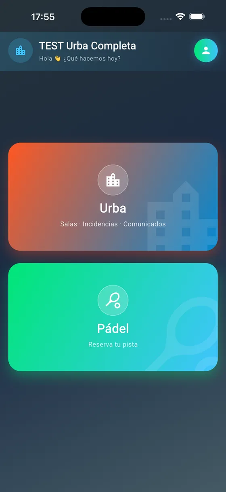
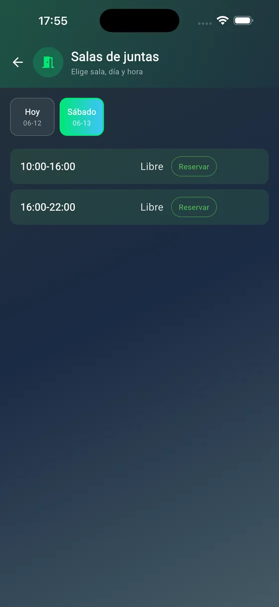
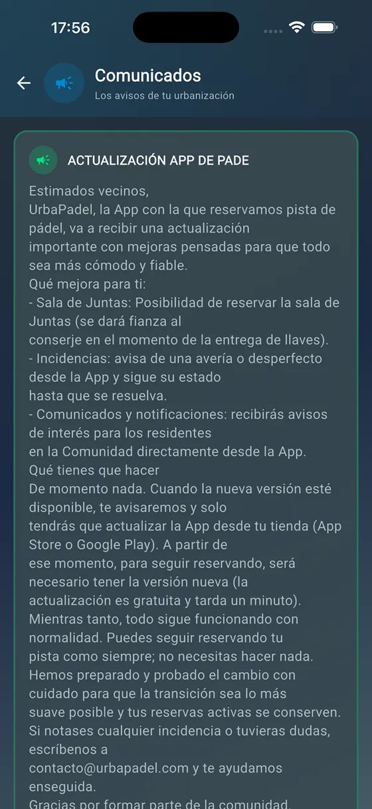

UrbaPadel
Las reservas de tu urbanización, sin grupos de WhatsApp ni hojas en el portal.Your community's bookings, without WhatsApp groups or paper on the noticeboard.
Más de 150 vecinos en 4 urbanizaciones.Over 150 residents across 4 communities.
- Flutter
- Firebase
- Cloud Functions


